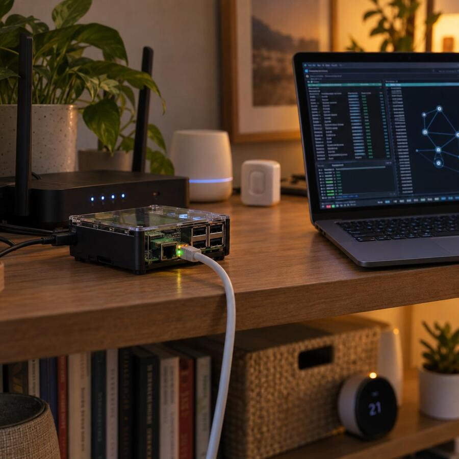

Как не открыть лишний порт на сервере
Tagged as raspberrypi, security, opensource
Written on 2026-09-26

Сегодня возился с настройкой сервисов умного дома на Raspberry Pi. На таких машинках постоянно что-нибудь меняется: устанавливаешь новое ПО, обновляешь старое, правишь конфиги, пробуешь очередной сервис. И в какой-то момент хочется убедиться, что после всех этих изменений наружу не стал смотреть какой-нибудь неожиданный порт.
Проверять это вручную неудобно. Можно запустить Nmap, но тогда придётся сканировать диапазон портов и потом разбираться с результатом. Мне же нужна была более узкая проверка для собственных серверов: узнать, какие сетевые порты машина действительно слушает, и проверить, доступны ли они с моего компьютера.
Поэтому я сделал небольшую утилиту ports-checker.
Сначала она подключается к серверу по SSH и получает список портов, которые слушают на внешних интерфейсах. Затем SSH-соединение закрывается, и каждый найденный порт проверяется уже с компьютера, на котором запущена команда. Таким образом, ports-checker сопоставляет взгляд изнутри сервера с тем, что реально доступно по сети.
Ожидаемые открытые порты можно перечислить через allowlist:
ports-checker --allow 22,80,443
Если доступен только SSH, веб-сервер и HTTPS — всё хорошо. Если после установки очередного сервиса обнаружится ещё один порт, которого нет в списке, утилита сообщит об ошибке и завершится с кодом 1.
Благодаря коду возврата такую проверку можно встроить в скрипт настройки сервера или запускать после обновлений. Тогда неожиданно открытый порт не затеряется среди остальных изменений, а сразу сломает проверку и привлечёт внимание.
Это не замена Nmap и не универсальный сканер безопасности. ports-checker проверяет только те порты, которые уже слушает удалённая машина. Зато для автоматического контроля собственных Raspberry Pi и небольших серверов этого как раз достаточно. А ещё, эта утилита решает проблему того, что на запуски nmap по широкому диапазону портов, в некоторых окружениях, могут срабатывать секалерты, например у провадера. Такой же кастомный скрипт, делающий несколько проверок, их не стриггерит.
Created with passion by 40Ants